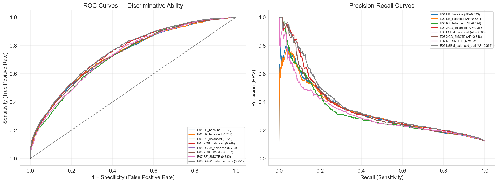
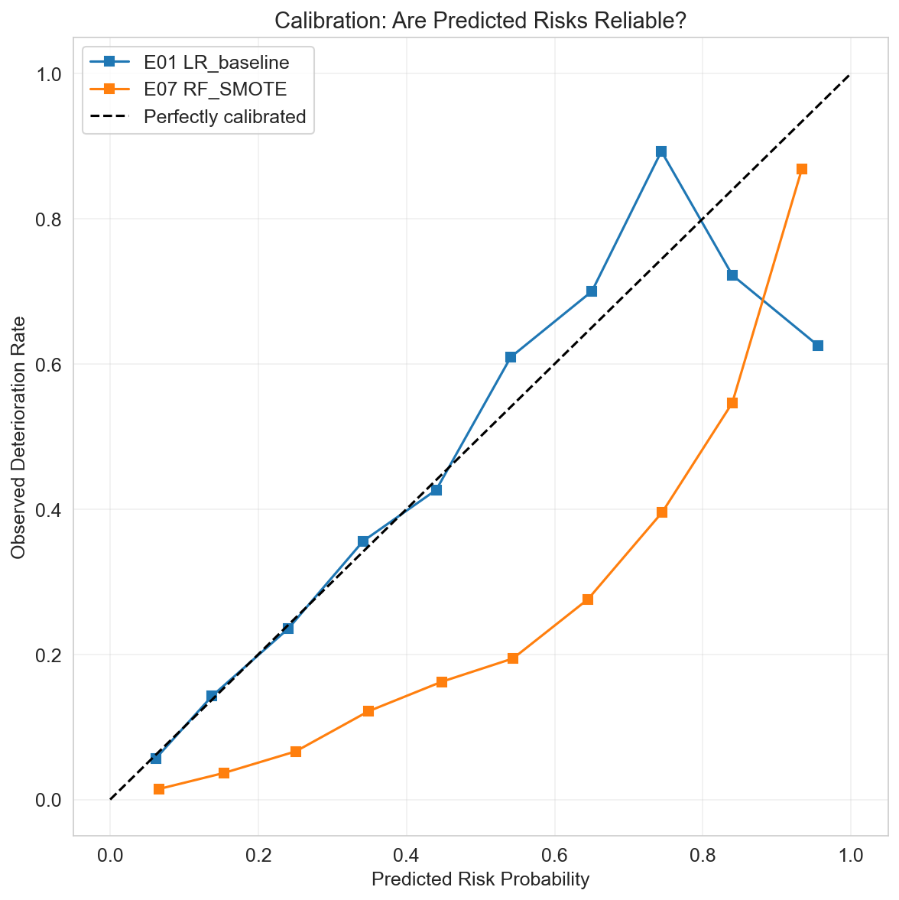
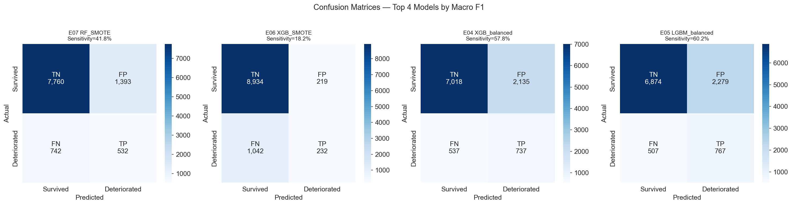
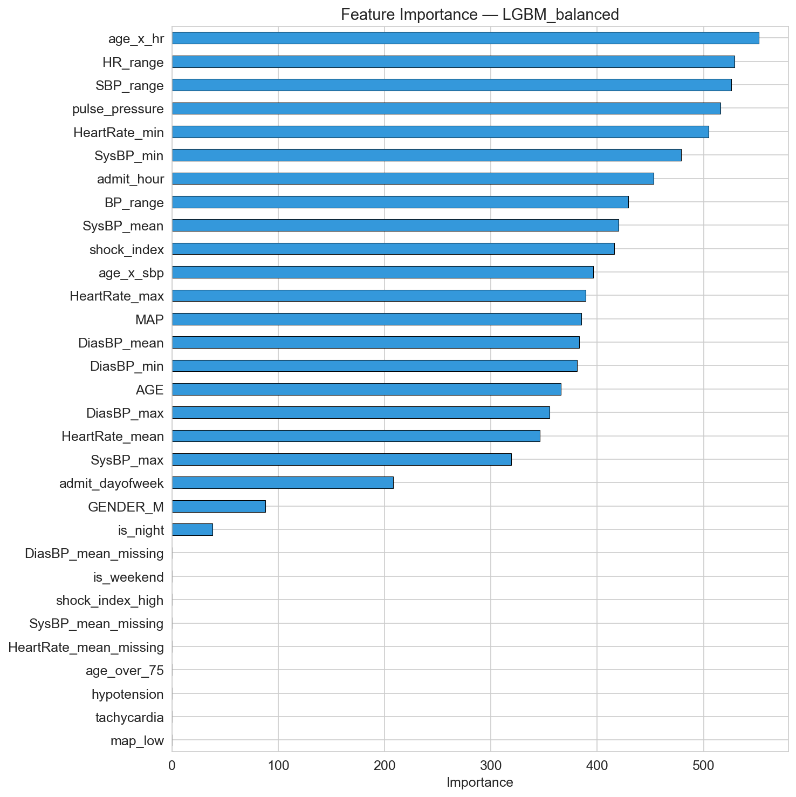
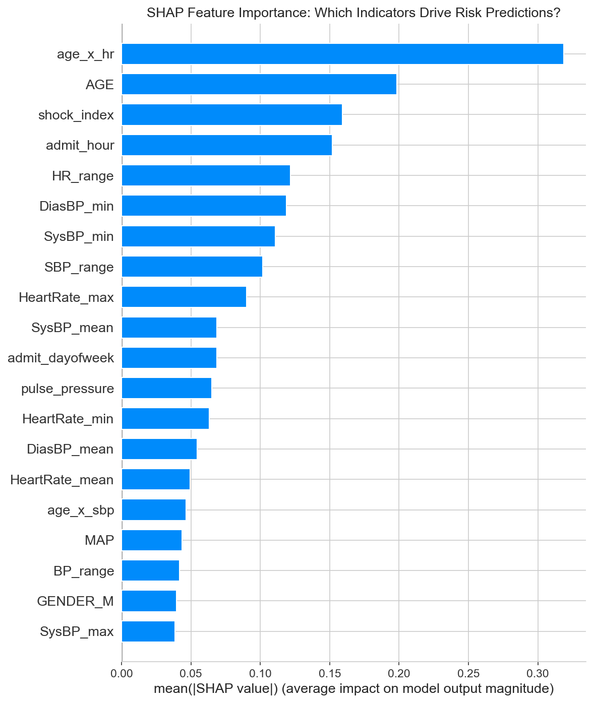
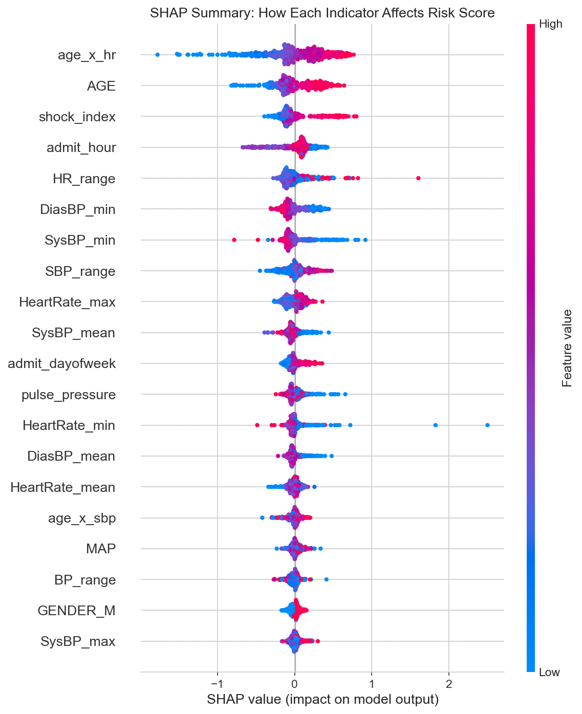

Final model
LightGBM, trained on the cleaned dataset with optional lab features (lactate, creatinine) included, is the production model served by the application.
0.786
ROC-AUC
0.73
Sensitivity
0.58
Macro-F1
Discrimination & calibration


Error analysis

What drives the model
Global feature importance shows which inputs matter most across the whole cohort; SHAP values additionally show the direction of each feature's effect. The same SHAP-style attribution is used per-patient in the application's "Why This Risk Score?" panel.



Interpretation
- Shock index (HR / systolic BP) is consistently the top driver — a physiologically well-known deterioration signal.
- Lactate and creatinine, when available, are strong risk-raising features, consistent with their clinical role as sepsis/organ-failure markers.
- The model trades some precision for higher sensitivity by design (threshold 0.44) — appropriate for a screening tool, where missing a deteriorating patient is costlier than a false alarm.
⚠️ These metrics describe model behavior on held-out historical data. The system is a research prototype and is not validated for clinical decision-making.